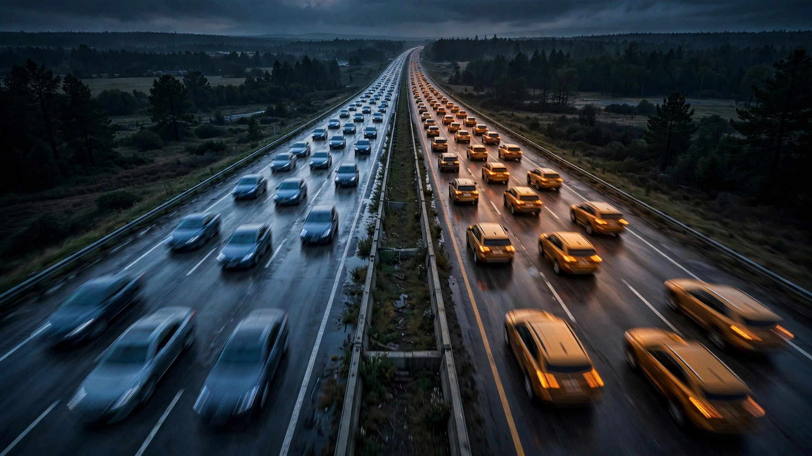

America Replaced Sedans with SUVs. The Body Count Moved with Them.

Two decades of cross-shopping propaganda told Americans a simple story: trade the sedan for an SUV, sit higher, live longer. Forty percent of fatal crash deaths in 2020-and-newer vehicles now involve SUVs, nearly double the 22% share from pre-2000 models.[1] The sedan share, meanwhile, slid from a 2005–2009 peak of 54% down to 41%. Two classes that once occupied entirely different risk tiers are now statistically indistinguishable in their share of America’s road body count.
We cross-tabulated FARS fatality data across 337 vehicle models, grouping each model’s deaths by model-year era to track how the death distribution shifted as the American fleet morphed from sedans and pickups into crossovers and three-row SUVs. The raw numbers tell a story that no marketing department will volunteer.
In the pre-2000 cohort, pickups actually led sedans by a whisker: 36.0% of deaths to sedans’ 35.7%, with SUVs a distant third at 22.2%. That made sense for the era: body-on-frame trucks dominated rural America, and the Explorer-era SUV boom was still gathering momentum, feeding off Ford’s margins and the Firestone rollover crisis that ironically drove buyers toward even larger models that felt more stable.
By the 2005–2009 model years, when the crossover revolution was reshaping dealer lots, sedans had ballooned to 53.9% of all deaths while SUVs shrank to just 19.2%, the lowest share in our dataset. That dip aligns almost perfectly with the ESC (electronic stability control) mandate timeline, which IIHS credited with slashing SUV rollover fatalities by more than a third, a structural improvement that sedans, which rarely rolled, couldn’t replicate in the same proportion.[2] For a brief window, engineering actually worked: SUVs got safer per vehicle, their death share fell, and the total fleet wasn’t yet tilted enough toward SUVs to erase the gain.
That window closed fast. By the 2015–2019 model years, SUVs had climbed back to 29.8% of deaths, fueled by the absolute explosion of compact crossovers like the Nissan Rogue, Toyota RAV4, and Honda CR-V that replaced the Camrys and Accords in suburban driveways across the country. The 2020+ cohort, admittedly a smaller sample with fewer years of exposure, pushed SUVs to 40.0%, within a single percentage point of sedans at 41.1%.
Pickups, for their part, have been steadily retreating as a share of deaths: from 36.0% pre-2000 down to 12.8% in 2020+ vehicles, a trajectory that reflects both an aging fleet and the fact that full-size pickups are increasingly the province of commercial buyers and a shrinking slice of the personal-vehicle market. The sports car and van categories have remained stable single-digit blips throughout, neither large enough to move the needle nor interesting enough to explain what went wrong.
The counterargument writes itself, and it’s not wrong: SUVs constitute roughly half of all new-vehicle sales in 2025–2026, so 40% of deaths is technically below their market share, suggesting a per-vehicle safety advantage over sedans that still holds.[3] An IIHS study from February 2025 partially supports this: heavier vehicles do protect their own occupants better, but the safety benefit plateaus sharply once curb weight exceeds the fleet average, and every additional 500 pounds above that point increases the danger to everyone else without helping the people inside.[4]
So the aggregate picture is roughly neutral: switching from sedans to SUVs didn’t make American roads deadlier in total, because the per-vehicle fatality rate for SUVs genuinely improved over two decades. But it didn’t make them meaningfully safer, either, because the fleet grew larger and heavier, and each additional SUV on the road incrementally increased the risk imposed on everyone not inside one. The death count didn’t drop; it shifted: from sedan occupants dying in their own crashes to pedestrians, cyclists, and smaller-car occupants dying in crashes initiated by vehicles that outweigh them by 1,500 pounds.
And within the SUV category itself, the spread is staggering. The GMC Acadia posts a deaths-per-crash ratio of 0.343; the Nissan Kicks, marketed as an SUV, scores 0.739, worse than many sedans.[1] IIHS now requires AEB as standard equipment for any 2026 safety award, a prerequisite that effectively bars the cheapest, lightest crossovers from carrying a badge that buyers interpret as “safe.”[5] Whether that moves the needle depends on whether people buy the badge or the sticker price.
What you should do: Stop assuming the class determines your risk. It doesn’t. A Nissan Kicks has a lethality profile closer to a Chevy Cobalt than a Toyota Highlander. Check the specific model’s IIHS rating at iihs.org/ratings, cross-reference it with NHTSA’s 5-Star ratings, and if you’re buying used, verify AEB and ESC are present and functional: not optional, not dealer-disabled, not a line item someone skipped in 2016 to save $800. The two technologies responsible for the biggest real-world death-rate reductions in the last 20 years are the ones most likely to be absent from the used car you’re actually going to buy.
Sources & References
- NHTSA, Fatality Analysis Reporting System (FARS), 2014–2023. Cross-tabulation of 187,058 deaths across 337 models by vehicle class and model year era. nhtsa.gov
- IIHS, “Life-saving benefits of ESC continue to accrue,” 2011. ESC reduced single-vehicle SUV fatalities by 59%, compared to 33% for passenger cars. iihs.org
- IHS Markit / S&P Global Mobility, U.S. new-vehicle registration data, 2025–2026. Light trucks (SUVs, pickups, vans) constitute approximately 78% of U.S. new-car sales.
- IIHS, “Supersizing vehicles offers minimal safety benefits — but substantial dangers,” February 5, 2025. iihs.org
- Automotive World, “Tougher crash avoidance rules shape 2026 IIHS awards,” March 2026. 63 vehicles qualified under stricter criteria requiring standard AEB and pedestrian crash prevention. automotiveworld.com